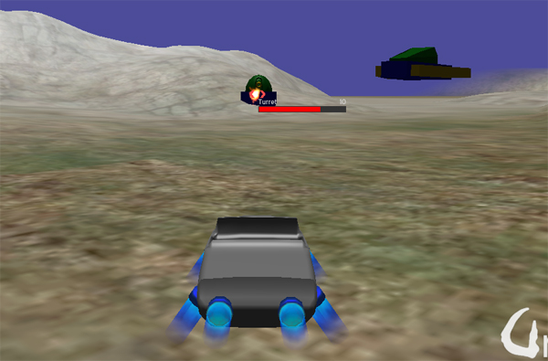
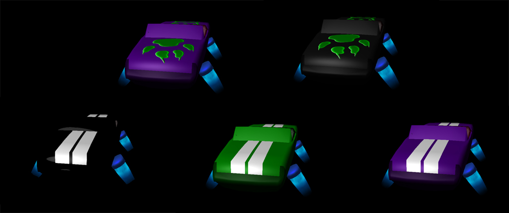

Lumak
No title as yet but I’ll post my progress on this thread.
Sound test

No title as yet but I’ll post my progress on this thread.
Sound test
I don’t know if this is worth mentioning, but I’m using Bullet’s raycastvehicle, obviously w/o wheel models, for better handling and for the car to closely follow terrain instead always being straight horizontal.

That’s fantastic! I love all your experiments, Lumak.

Thanks. There’s so much to experiment when it comes to game development, which is nice… if you love programming heh.
Experimenting with importing a model as “node,” rotating staticmodels independently, blowing it up, and reconstructing it at runtime. No rigidbodies are used in the destroyed state, as it’s just for aesthetics and the duration is short.
In some games that I’ve seen, I wondered if the temporary enemy HP bar pop-up when you damage an enemy was in 3D space or UI. UI looks pretty clean to me.


Well done!
I’ve also opted for UI in AX:EL but experience then told me it was hard to find a correct color for the various backgrounds, especially on smaller aircrafts.
At last the best solution for me was to use both the life bar and a smoke effect that gets more intensity as the life goes down.
Good to know, as I only have placed one hp bar so far for testing so I might have to do a similar thing for my game.
I’ll place my turret’s head and barrel rotation code here, as some might find it useful dealing with world rotation to local. More specifically, turret is imported as “node” which means it has hierarchical node structure similar to having a skeleton. So, knowing the internal structure of the model but not knowing the world orientation of each node, you can calculate the world rotation via LookAt() then acquire its local rotation to limit the rotation axis and angles.
edit: I keep editing this to clarify this routine…
edit: you have to know the node hierarchy to know that barrel is a child of the head
void Turret::FixedUpdate(float timeStep)
{
if (enemyNode_)
{
Vector3 enemyPos = enemyNode_->GetWorldPosition();
Vector3 distSeg = enemyPos - node_->GetWorldPosition();
if (distSeg.Length() < detectDistance_)
{
// head rot
Quaternion qrot;
headNode_->LookAt(enemyPos, Vector3::UP, TS_WORLD);
Vector3 euHead = headNode_->GetRotation().EulerAngles();
qrot.FromEulerAngles(0.0f, euHead.y_, 0.0f);
headNode_->SetRotation(qrot);
// barrel rot
barrelNode_->LookAt(enemyPos, Vector3::UP, TS_WORLD);
Vector3 euBarrel = barrelNode_->GetRotation().EulerAngles();
qrot.FromEulerAngles(euBarrel.x_, 0.0f, 0.0f);
barrelNode_->SetRotation(qrot);
}
}
}
Trying my hand at car customization with decals and colors. I’ve yet to apply PBR.


Looks really good!
Could you please explain decals customization?
I’m using a decal texture similar to how diffuse is used, just that decal texture is mostly transparent.